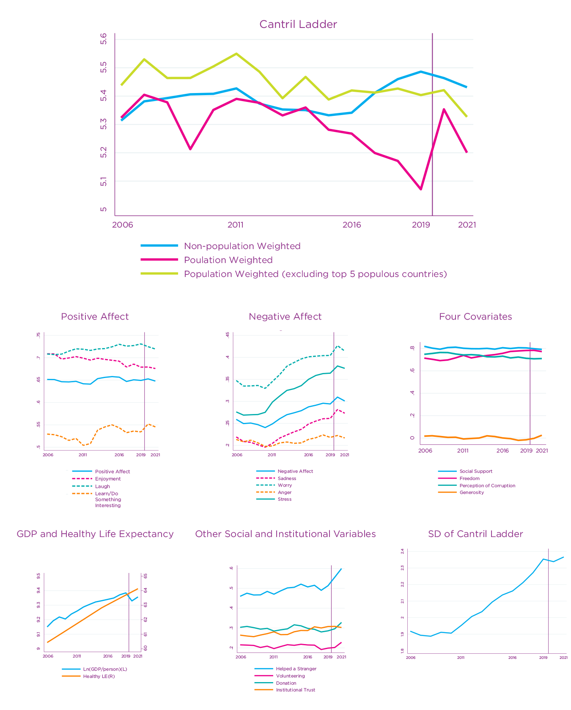
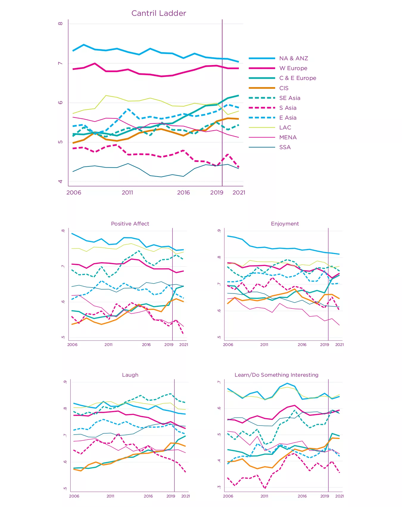
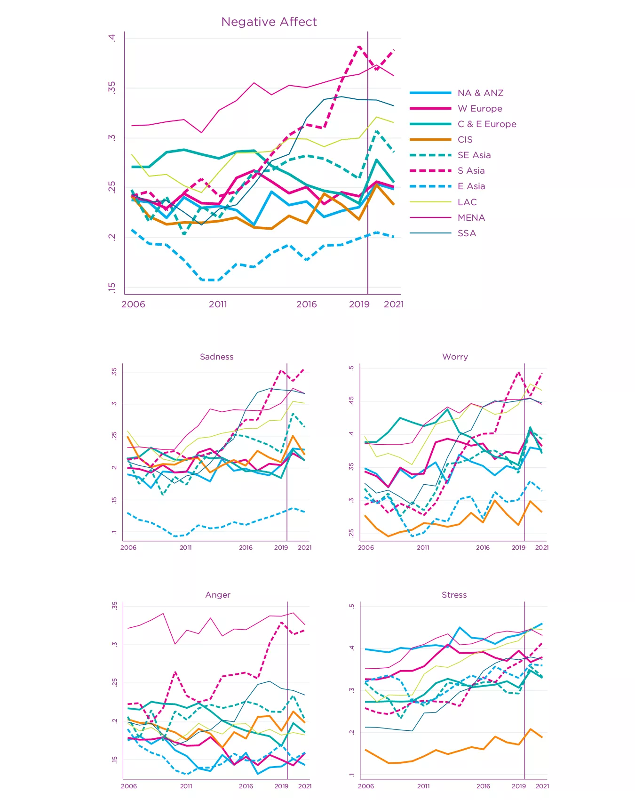
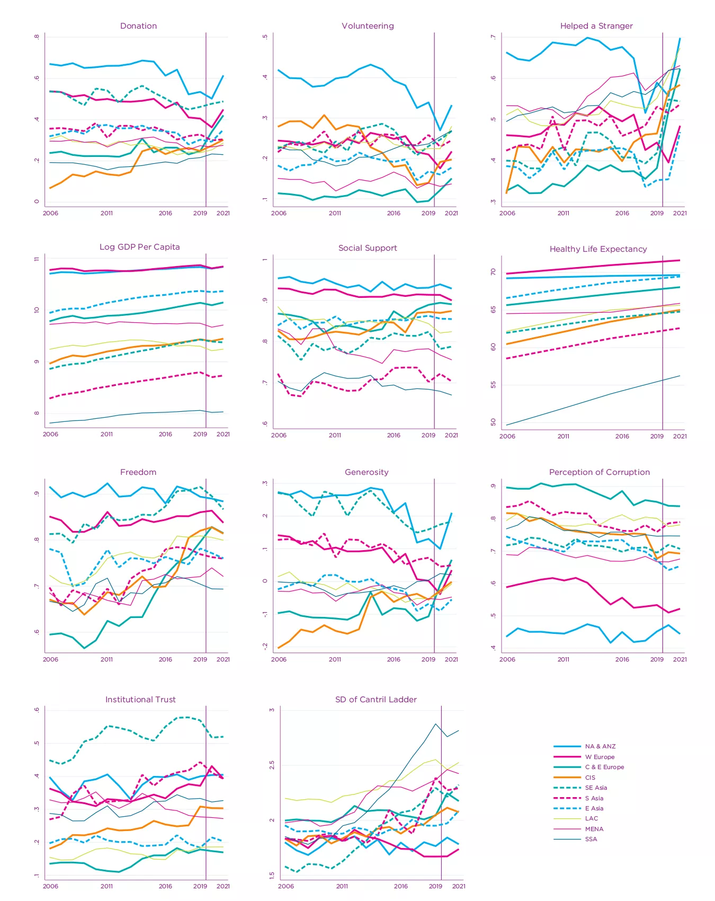
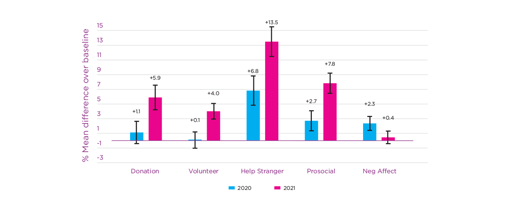

Happiness, Benevolence, and Trust During COVID-19 and Beyond
Introduction
This year marks the tenth anniversary of the World Happiness Report, thus inviting us to look back and forward while maintaining our reporting of current well-being and broadening our analysis of the far-ranging effects of COVID-19. Our first section presents our usual ranking and modelling of national happiness based on data covering 2019 through 2021.
In our second section, we look back at the evolution of life evaluations and a number of emotions since the Gallup World Poll data first became available in 2005-2006. Using a wider range of the emotional and other supports for life evaluations enables us to distinguish a greater variety of global and regional trends. It also sets the stage for the third section of the chapter, where we use individual-level data from 2017 through 2021 to examine how life under COVID-19 has changed for people in different circumstances.
In our fourth section, we briefly update our analysis of how different features of national demographic, social, and political structures have combined with the consequences of policy strategies and disease exposure to help explain international differences in 2020 and 2021 COVID-19 death rates. A central finding continues to be the extent to which the quality of the social context, especially the extent to which people trust their governments and have trust in the benevolence of others, supports their happiness before, during, and likely after the pandemic. Countries where people trusted their governments and each other experienced lower COVID-19 death tolls and set the stage for maintaining or rebuilding a sense of common purpose to deliver happier, healthier and more sustainable lives. This forward-looking part permits an optimistic tinge based on the remarkable growth in prosocial activities during 2021.
Our results are summarised in a short concluding section.
Measuring and Explaining National Differences in Life Evaluations
Technical Box 1: Measuring Subjective Well-Being.
Our measurement of subjective well-being continues to rely on three main well-being indicators: life evaluations, positive emotions, and negative emotions (described in the report as positive and negative affect). Happiness rankings are based on life evaluations as the more stable measure of the quality of people’s lives. In World Happiness Report 2022, we pay special attention, as we did in World Happiness Report 2021, to specific daily emotions (the components of positive and negative affect) to better track how COVID-19 has altered different aspects of life.
Life evaluations. The Gallup World Poll, which remains the principal source of data in this report, asks respondents to evaluate their current life as a whole using the mental image of a ladder, with the best possible life for them as a 10 and worst possible as a 0. Each respondent provides a numerical response on this scale, referred to as the Cantril ladder. Typically, around 1,000 responses are gathered annually for each country. Weights are used to construct population-representative national averages for each year in each country. We base our national happiness rankings on a three-year average, thereby increasing the sample size to provide more precise estimates.
Positive emotions. Positive affect is given by the average of individual yes or no answers for three questions about emotions experienced or not on the previous day: laughter, enjoyment, and learning or doing something interesting (for details, see Technical Box 2).
Negative emotions. Negative affect is given by the average of individual yes or no answers about three emotions experienced on the previous day: worry, sadness, and anger.
Comparing life evaluations and emotions:
Life evaluations provide the most informative measure for international comparisons because they capture quality of life in a more complete and stable way than emotional reports based on daily experiences.
Life evaluations differ more between countries than emotions and are better explained by the widely differing life experiences in different countries. Emotions experienced the previous day are well explained by events of the day being asked about, while life evaluations more closely reflect the circumstances of life as a whole. We show later in the chapter that emotions are significant supports for life evaluations and provide essential insights into how the quality of life has changed during COVID-19 for people in different life circumstances.[1]
Positive emotions are more than twice as frequent as negative emotions. Looking at last year’s data, the global average of positive emotions was 0.66 (i.e., the average respondent experienced 2 of the 3 positive emotions the previous day) compared to the global average of 0.29 for negative emotions.
Ranking of Happiness 2019-2021
Our country rankings in Figure 2.1 show life evaluations (answers to the Cantril ladder question) for each country, averaged over 2019-2021. Not every country has surveys every year. The total sample sizes are reported in Statistical Appendix 1 and are reflected in Figure 2.1 by the horizontal lines showing the 95% confidence intervals. The confidence intervals are tighter for countries with larger samples.
The overall length of each country bar represents the average ladder score, also shown in numerals next to the country names. The rankings in Figure 2.1 depend only on the respondents' average Cantril ladder scores, not on the values of the six variables that we use to help account for the large differences we find.
Figure 2.1: Ranking of Happiness 2019-2021

Note: Those with a * do not have survey information in 2020 or 2021. Their averages are based on the 2019 survey.
The colour-coded sub-bars in each country row represent the extent to which six key variables contribute to explaining life evaluations. These variables (shown in Table 2.1) are GDP per capita, social support, healthy life expectancy, freedom, generosity, and corruption. As already noted, our happiness rankings are not based on any index of these six factors—the scores are instead based on individuals’ own assessments of their lives, as revealed by their answers to the single-item Cantril ladder life-evaluation question. We use observed data on the six variables and estimates of their associations with life evaluations to explain the observed variation of life evaluations across countries, much as epidemiologists estimate the extent to which life expectancy is affected by factors such as smoking, exercise and diet. As will be explained in more detail later, and in the online FAQ, the value for Dystopia (1.83) is the predicted Cantril ladder for a hypothetical country with the world’s lowest values for each of the six variables. This permits the calculated contributions from the six factors to be zero or positive for every actual country. We also show how measures of experienced well-being, especially positive affect, are predicted by the six factors and how the affect measures contribute to the explanation[2] of higher life evaluations.
In Table 2.1, we present our latest modelling of national average life evaluations and measures of positive and negative affect (emotion) by country and year.[3] For ease of comparison, the table has the same basic structure as Table 2.1 did in several previous editions, most recently in World Happiness Report 2020. We now include data for both 2020 and 2021. Despite difficulties COVID-19 posed for the Gallup World Poll’s operations, our sample now includes data from 116 countries and territories in 2020 and 119 in 2021. Adding the data from 2020 and 2021 slightly improves the model’s overall fit while leaving the coefficients largely unchanged. There are four equations in Table 2.1. The first equation provides the basis for constructing the sub-bars shown in Figure 2.1.
The results in the first column of Table 2.1 explain national average life evaluations in terms of six key variables: GDP per capita, social support, healthy life expectancy, freedom to make life choices, generosity, and freedom from corruption.[4] Taken together, the six variables explain more than three-quarters of the variation in national annual average ladder scores among countries, using data from the years 2005 to 2021.[5]
| Independent Variable | Dependent Variable | |||
|---|---|---|---|---|
| Cantril Ladder (0-10) | Positive Affect (0-1) | Negative Affect (0-1) | Cantril Ladder (0-10) | |
| Log GDP per capita | 0.36 | -.013 | 0.0001 | 0.388 |
| (0.066)*** | (0.009) | (0.007) | (0.065)*** | |
| Social support | 2.420 | 0.316 | -.328 | 1.778 |
| (0.368)*** | (0.055)*** | (0.049)*** | (0.361)*** | |
| Healthy life expectancy at birth | 0.029 | -.0007 | 0.003 | 0.03 |
| (0.01)*** | (0.001) | (0.001)*** | (0.01)*** | |
| Freedom to make life choices | 1.305 | 0.368 | -.090 | 0.509 |
| (0.298)*** | (0.041)*** | (0.04)** | (0.284)* | |
| Generosity | 0.583 | 0.09 | 0.024 | 0.378 |
| (0.265)** | (0.032)*** | (0.027) | (0.254) | |
| Perceptions of corruption | -.704 | -.006 | 0.094 | -.704 |
| (0.271)*** | (0.027) | (0.022)*** | (0.259)*** | |
| Positive affect | 2.222 | |||
| (0.333)*** | ||||
| Negative affect | 0.173 | |||
| (0.395) | ||||
| Year fixed effects | Included | Included | Included | Included |
| Number of countries | 156 | 156 | 156 | 156 |
| Number of obs. | 1853 | 1848 | 1852 | 1847 |
| Adjusted R-squared | 0.753 | 0.439 | 0.322 | 0.777 |
Notes: This is a pooled OLS regression for a tattered panel explaining annual national average Cantril ladder responses from all available surveys from 2005 through 2021. See Technical Box 2 for detailed information about each of the predictors. Coefficients are reported with robust standard errors clustered by country in parentheses. ***, **, and * indicate significance at the 1, 5 and 10 percent levels respectively.
The second and third columns of Table 2.1 use the same six variables to estimate equations for national averages of positive and negative affect, where both are based on answers about yesterday’s emotional experiences (see Technical Box 2 for how the affect measures are constructed). In general, emotional measures, especially negative ones, are differently and much less fully explained by the six variables than life evaluations. Per-capita income and healthy life expectancy have significant effects on life evaluations, but not, in these national average data, on affect.[6] The situation changes when we consider social variables. Bearing in mind that positive and negative affect are measured on a 0 to 1 scale, while life evaluations are on a 0 to 10 scale, social support can be seen to have similar proportionate effects on positive and negative emotions as on life evaluations. Freedom and generosity have even larger associations with positive affect than with the Cantril ladder. Negative affect is significantly reduced by social support, freedom, and the absence of corruption.
In the fourth column, we re-estimate the life evaluation equation from column 1, adding both positive and negative affect to partially implement the Aristotelian presumption that sustained positive emotions are important supports for a good life.[7] The most striking feature is the extent to which the results continue to buttress a finding in psychology that the existence of positive emotions matters much more than the absence of negative ones when predicting either longevity[8] or resistance to the common cold.[9] Consistent with this evidence, we find that positive affect has a large and highly significant impact in the final equation of Table 2.1, while negative affect has none. This finding of national differences does not carry forward into our later modelling of differences among individuals within the same country, where we find positive and negative affect to have almost equal impacts at the individual level.
As for the other coefficients in the fourth column, the differences are only substantial on variables that have the largest impacts on positive affect: social support, freedom, and generosity. Thus, we infer that positive emotions play a strong role in support of life evaluations. Much of the impact of social support, freedom, and generosity on life evaluations is channelled through their influence on positive emotions. That is, these three variables have large impacts on positive affect, which in turn has a major impact on life evaluations.
Technical Box 2: Detailed information about each of the predictors in Table 2.1
GDP per capita is in terms of Purchasing Power Parity (PPP) adjusted to constant 2017 international dollars, taken from the World Development Indicators (WDI) released by the World Bank on December 16, 2021. See Statistical Appendix 1 for more details. GDP data for 2021 are not yet available, so we extend the GDP time series from 2020 to 2021 using country-specific forecasts of real GDP growth from the OECD Economic Outlook No. 110 (Edition December 2021) or, if missing, the World Bank’s Global Economic Prospects (Last Updated: 01/11/2022), after adjustment for population growth. The equation uses the natural log of GDP per capita, as this form fits the data significantly better than GDP per capita.
The time series for healthy life expectancy at birth is constructed based on data from the World Health Organization (WHO) Global Health Observatory data repository, with data available for 2000, 2010, 2015, and 2019. Interpolation and extrapolation are used to match this report’s sample period (2005-2021). See Statistical Appendix 1 for more details.
Social support is the national average of the binary responses (0=no, 1=yes) to the Gallup World Poll (GWP) question “If you were in trouble, do you have relatives or friends you can count on to help you whenever you need them, or not?”
Freedom to make life choices is the national average of binary responses (0=no, 1=yes) to the GWP question “Are you satisfied or dissatisfied with your freedom to choose what you do with your life?”
Generosity is the residual of regressing the national average of GWP responses to the donation question “Have you donated money to a charity in the past month?” on log GDP per capita.
Perceptions of corruption are the average of binary answers to two GWP questions: “Is corruption widespread throughout the government in this country or not?” and “Is corruption widespread within businesses in this country or not?” Where data for government corruption are missing, the perception of business corruption is used as the overall corruption-perception measure.
Positive affect is defined as the average of previous-day affect measures for laughter, enjoyment, and doing or learning something interesting. This marks a change from recent years, where only laughter and enjoyment were included. The inclusion of interest gives us three components in each of positive and negative affect and slightly improves the equation fit in column 4. The general form for the affect questions is: Did you experience the following feelings during a lot of the day yesterday? Only the interest question is phrased differently: Did you learn or do something interesting yesterday? See Statistical Appendix 1 for more details.
Negative affect is defined as the average of previous-day affect measures for worry, sadness, and anger.
In Figure 2.1, each country’s bar is divided into seven segments, showing our research efforts to associate the ladder levels with possible sources. The first six sub-bars show how much each of the six key variables is calculated to contribute to that country’s ladder score, relative to a hypothetical country called “Dystopia”—named because it has values equal to the world’s lowest national averages for 2019-2021 for each of the six key variables used in Table 2.1. We use Dystopia as a benchmark against which to compare contributions from each of the six factors. The choice of Dystopia as a benchmark permits every real country to have a positive (or at least zero) contribution from each of the six factors. Based on the estimates in the first column of Table 2.1, we calculate that Dystopia had a 2019-2021 life evaluation equal to 1.83 on the 0 to 10 scale. The final sub-bar is the sum of two components: the calculated average 2017-2019 life evaluation in Dystopia (=1.83) plus each country’s own prediction error, which measures the extent to which life evaluations are higher or lower than those predicted by our equation in the first column of Table 2.1. These residuals are as likely to be negative as positive.[10]
How do we calculate each factor’s contribution to average life evaluations? Taking the example of healthy life expectancy, the sub-bar in the case of Tanzania is equal to the number of years by which healthy life expectancy in Tanzania exceeds the world’s lowest value, multiplied by the Table 2.1 coefficient for the influence of healthy life expectancy on life evaluations. The width of each sub-bar then shows, country-by-country, how much each of the six variables contributes to the international ladder differences.
These calculations are illustrative rather than conclusive for several reasons. One important limitation is that our selection of candidate variables is restricted to what is available for all these countries. Traditional variables like GDP per capita and healthy life expectancy are widely available. But measures of the quality of the social context, including a variety of indicators of social trust, engagement, and belonging, are not yet available for all countries. The variables we use may be properly taking credit due to other variables or unmeasured factors. There are also likely to be vicious or virtuous circles, with two-way linkages among the variables. For example, there is much evidence that those who have happier lives are likely to live longer, and be more trusting, more cooperative, and generally better able to meet life’s demands.[11] This will feed back to improve health, income, generosity, corruption, and a sense of freedom. Additionally, some of the variables are derived from the same respondents as the life evaluations, and hence possibly determined by common factors. There is less risk when using national averages because individual differences in personality and many life circumstances tend to average out at the national level.
We developed robustness tests to ensure that our results are not significantly biased because we use the same individuals to report life evaluations, social support, freedom, generosity, and corruption. We first split each country’s respondents (see Table 10 of Statistical Appendix 1 of World Happiness Report 2018 for more detail) randomly into two groups. We then used the average values for social support, freedom, generosity, and absence of corruption taken from one half of the sample to explain average life evaluations in the other half. As expected, the coefficients on each of the four variables fell slightly.[12] But the changes were reassuringly small (ranging from 1% to 5%) and were not statistically significant, thus giving additional confidence in the estimates shown in Table 2.1.[13]
The seventh and final segment in each bar is the sum of two components. The first component is a fixed number representing our calculation of the 2017-2019 ladder score for Dystopia (=1.83). The second component is the average 2017-2019 residual for each country. The sum of these two components comprises the right-hand sub-bar (in violet) for each country. It varies from one country to the next because some countries have life evaluations above their predicted values, and others lower. The residual simply represents the part of the national average ladder score not explained by our six variables. With the residual included, the sum of all the sub-bars adds up to the actual average life evaluation response. This actual average life evaluation is what is used for our country rankings.
What do the data show for the 2019-2021 country rankings?
Two features carry over from previous editions of the World Happiness Report. First, there is still a lot of year-to-year consistency in the way people rate their lives in different countries. Since we do our ranking on a three-year average, information is carried forward from one year to the next (See Figure 1 of Statistical Appendix 1 for individual country trajectories). For the fifth year in a row, Finland continues to occupy the top spot, with a score significantly ahead of other countries in the top ten. Denmark continues to occupy second place, with Iceland up from 4th place last year to 3rd this year. Switzerland is 4th, followed by the Netherlands and Luxembourg. The top ten are rounded out by Sweden, Norway, Israel and New Zealand. The following five are Austria, Australia, Ireland, Germany, and Canada. This marks a substantial fall for Canada, which was 5th in the first World Happiness Report. The rest of the top 20 include the United States at 16th (up from 19th last year), the United Kingdom and Czechia still in 17th and 18th, followed by Belgium at 19th, and France at 20th, its highest ranking yet.
Finland continues to occupy the top spot, one of five Nordic countries in the top ten.
When looking at average ladder scores, it is also important to note the horizontal whisker lines at the right-hand end of the main bar for each country. These lines denote the 95% confidence regions for the estimates, so that countries with overlapping error bars have scores that do not significantly differ from each other.[14]
Second, there remains a large gap between the top and bottom countries. Within these groups, the top countries are more tightly grouped than are the bottom countries. Within the top group, national life evaluation scores have a gap of 0.40 between the 1st and 5th positions and another 0.21 between the 5th and 10th positions. Thus, there is a gap of about 0.6 points between the first and 10th positions. The bottom ten countries have a much bigger range of scores, covering almost 1.4 points.
Despite the general consistency among the top country scores, there have been many significant changes among the other countries. Looking at changes over the longer term, many countries have exhibited substantial changes in average scores, and hence in country rankings, as shown in more detail in Figures 13 to 15 in the Statistical Appendix.
Scores and confidence regions are based on resident populations in each country rather than their citizenship or place of birth. In World Happiness Report 2018, we split the responses between the locally and foreign-born populations in each country. We found the happiness rankings to be essentially the same for the two groups. There is, in some cases, some continuing influence from source-country happiness and some tendency for migrants to move to happier countries. Among the 20 happiest countries in that report, the average happiness for the locally born was about 0.2 points higher than for the foreign-born.
Overall, the model explains average life evaluation levels quite well within regions, among regions, and for the world as a whole. On average, the countries of Latin America still have mean life evaluations that are significantly higher (by about 0.5 on the 0 to 10 scale) than predicted by the model. This difference has been attributed to a variety of factors, including some unique features of family and social life in Latin American countries. To explain what is special about social life in Latin America, Chapter 6 of World Happiness Report 2018 by Mariano Rojas presented a range of new data and results showing how a multigenerational social environment supports Latin American happiness beyond what is captured by the variables available in the Gallup World Poll. In partial contrast, the countries of East Asia have average life evaluations below predictions, although only slightly and insignificantly so in our latest results.[15] This has been thought to reflect, at least in part, cultural differences in the way people think about and report on the quality of their lives.[16] Our findings of the relative importance of the six factors are generally unaffected by whether or not we make explicit allowance for these regional differences.[17] Chapter 6 contains data (only available for 2020) from several new variables sometimes thought to be more prevalent in East Asia than elsewhere, including life balance, feeling at peace with life, and a focus on others rather than oneself. As shown in Chapter 6, these variables are important to life evaluations everywhere and are, in fact, most prevalent in the top-ranked Nordic countries. Thus, taking those data into account when explaining life evaluations does not materially change the relative importance of the other variables and does not change the relative predicted rankings, and hence the average residuals, in East Asia and the Nordic Countries.[18]
Our main country rankings are not based on the predicted values from our equations but rather, and by our deliberate choice, on the national averages of answers to the Cantril ladder life evaluation question. The other two happiness measures for positive and negative affect are themselves of independent importance and interest and contribute to overall life evaluations, especially in the case of positive affect. Measures of emotions play an even greater role in our analysis of life under COVID-19. This is partly because COVID-19 has affected various emotions differently and partly because emotions based on yesterday’s experiences tend to be more volatile than life evaluations, which are more stable in response to temporary disturbances. Various attempts to use big data to measure happiness using word analysis of Twitter feeds, as in Chapter 4 of this report, are more likely to capture mood changes rather than changes in overall life evaluations. In World Happiness Report 2019, we presented comparable rankings for all three subjective well-being measures that we track: the Cantril ladder (and its standard deviation, which provides a measure of happiness inequality[19]), positive affect and negative affect, along with country rankings for the six variables we use in Table 2.1 to explain our measures of subjective well-being. Comparable data for 2019-2021 are reported in Figures 16 to 39 of Statistical Appendix 1.
Tracking happiness since 2005-2006
As shown in Chapter 3, there has been in this century a surge of interest in happiness. This has been to a significant extent enabled by the data available in the Gallup World Poll since 2005-2006 and analysed in the World Happiness Report since 2012. Looking back over these years, what has happened to happiness? The availability of fifteen years of data covering more than 150 countries provides a unique stock-taking opportunity. In this section, we consider how life evaluations, emotions and many of their supports have evolved for the world as a whole, and more importantly, by global region and country.[20] Country-by-country analysis can be found in Figures 13-15 in the online Statistical Appendix for this chapter. We show the difference for each country between their average Cantril ladder 2008-2012 with the corresponding average for 2019-2021. The latter is the same average used in the rankings shown in Figure 2.1. As shown in the Appendix, and also in this link, life evaluations rose by more than a full point on the 0 to 10 scale in 15 countries and fell by that amount or more in eight countries. The ten countries with the largest gains from 2008-2012 to 2019-2021 were, in order, Serbia, Bulgaria, Romania, Hungary, Togo, Bahrain, Latvia, Benin, Guinea and Armenia. The ten countries with the largest drops were Lebanon, Venezuela, Afghanistan, Lesotho, Zimbabwe, Jordan, Zambia, India, Mexico and Botswana.
Over the past ten years, life evaluations rose by more than a full point on the 0 to 10 scale in 15 countries and fell by that amount or more in eight countries.
Figure 2.2 has several panels showing global trends in life evaluations, emotions, and other key variables from the outset of the Gallup World Poll in 2005-2006 through 2021. The first panel shows average life evaluations calculated in three different ways: A global series with each country weighted by its adult population (aged 15+), a second series like the first but excluding the five countries with the largest population (specifically China, India, the United States, Indonesia, and Pakistan)[21], and a third in which each country is weighted equally, as is also the case for our earlier and subsequent analysis in this chapter. The volatility of the population-weighted series reflects the sharp changes in the two largest countries, China and India, partly due to changes in survey collection methods.[22] The population-weighted series, excluding the five most populous countries, shows smaller swings and a slightly declining pattern over the past 15 years. The third series, where each country is counted equally, shows a level slightly higher now than at the start of the Gallup World Poll. The remaining panels in this and subsequent figures give each country equal weight in constructing global and regional averages.
The second panel shows positive affect in total and also its three components. Smiling or laughing a lot during the previous day is the most common of all the components of either positive or negative affect, and has been on a slightly rising trend over the past 15 years, slipping slightly during the pandemic years 2020 and 2021. Enjoyment started at the same frequency as laughter, but by 2021 it was significantly less common. Doing or learning something interesting fell over the first five years of the survey but has been on a generally rising trend since 2011. Positive affect, as the average of the three measures, has been more stable than any of the components, with no discernable trend in its average value of about 0.66 on the scale from 0 to 1.
The third panel shows negative affect, its three components separately (worry, sadness and anger), and stress, all referring to a person’s feelings on the day preceding the survey. The levels and patterns are quite different from positive affect, and their average levels are less than half as high. After five reasonably stable years (2005/06 through 2010), worry and sadness have been rising over the past ten years, especially during 2020, the first year of COVID-19, before improving somewhat in 2021. Anger remains much less frequent, with no significant trend changes. The average for negative affect was about 0.25 for the first five years and followed a fairly steady upward trend since, with a jump in 2020 and mostly returning to the underlying trend in 2021. Stress, which is not a component of our negative affect measure, was also fairly constant for the first five years but has increased steadily ever since, faster than worry or sadness, with its steepest increase in 2020.
The following panels show the corresponding time paths for the main variables to explain happiness in Figure 2.1. There has been growth in both real GDP per capita and healthy life expectancy,[23] fairly constant levels of social support, declines in perceived corruption, and substantial average growth in the extent to which people feel they have the freedom to make key life choices and in helping strangers and other forms of benevolence.[24]
Finally, we show that average levels of trust in public institutions have generally grown slightly since 2012.
Fig. 2.2: Global trends from 2006 through 2021

These global patterns mask considerable variety among global regions, as shown by Figures 2.3 to 2.5. As shown by the Cantril ladder, life evaluations have continued their 15-year convergence between Western and Eastern Europe, with three Balkan countries, Bulgaria, Romania and Serbia, as already noted, having the largest increases in life evaluations from 2008-2012 to 2019-2021. The current gap in life evaluations between Western and Eastern Europe is now less than half what it was ten years ago. The Commonwealth of Independent States (CIS) countries shared this convergence at first but not in later years. Life evaluations in Asia show some growth in East and Southeast Asia and drops since 2010 in South (S) Asia. Ladder evaluations grew until 2012 in Latin America while falling slightly, especially in 2020. Ladder scores have generally fallen in the MENA (the Middle East and North Africa) region while being fairly constant for Sub-Saharan Africa (SSA). The NA+ANZ group of countries (North America, Australia, and New Zealand) had higher life evaluations than Western Europe at the beginning of the period, but that gap has mostly disappeared. Within Western Europe, the Nordic countries have especially high life evaluations and generally better performance in handling COVID-19, as shown later in the chapter.
The remaining panels of Figure 2.3 show positive affect and its components for each of the ten global regions. Over the survey period, the average for positive affect has been highest in the Americas, but on a generally falling trend. It has been rising fastest in Eastern Europe, Southeast Asia and the CIS, and low and falling in South Asia and the MENA countries. There have been no significant trends for positive affect in Sub Saharan Africa and East Asia.
There are interesting regional differences in the components of positive affect, with enjoyment highest in the NA+ANZ group and lowest in MENA but falling on the same downward trend in both. Enjoyment was initially much higher in Western than Eastern Europe until 2012 but had been falling in the west and rising in the east since reaching full convergence in 2020 before rising in both parts of Europe in 2021.
Smiling and laughing started high and have since risen further in Southeast Asia while starting low and falling since in South Asia. By 2020 and 2021, these two parts of Asia were the world’s top and bottom regions, respectively. Smiling and laughing were least frequent, and equally so, in Eastern Europe and the CIS at the beginning of the Gallup World Poll in 2005-2006. They have since been rising in lockstep to exceed those in South Asia and MENA. Laughing and smiling were initially most frequent in Latin America and the NA+ANZ group and have been fairly constant there since then. Nine of the ten regions have seen less laughter during both of the COVID-19 years, with Eastern Europe providing the sole exception.
Doing or learning something of interest has large inter-regional differences in levels but fewer trends than for the other components of positive affect. Interest was lowest in South Asia throughout the survey period, but generally rising rather than falling. Interest grew equally, from initially low levels, in the CIS and Eastern Europe. It was highest and fairly constant in Latin America and NA+ANZ, and slightly lower but converging upwards in Western Europe, following a similar path as in Sub-Saharan Africa.
Figure 2.4 shows the regional averages for negative affect and its components and stress. Negative affect as a whole was highest and rising in MENA and South Asia, with the increase greatest in South Asia. All regions have more negative affect now than ten years ago, except for Eastern Europe. This is best explained by looking at the components separately.
Sadness in East Asia has throughout the period been less than in any other region, declining until 2010 and rising thereafter, still less than half as prevalent as elsewhere in the world. The fastest increases in sadness and the highest eventual levels were in South Asia, MENA, Latin America, and Sub-Saharan Africa. There were mid-range levels and no clear trends in the other regions. There was increased sadness in 2020 in every region except South Asia and Sub-Saharan Africa, followed in 2021 by reductions in sadness in every region except South Asia, which has also seen by far the largest increases in worry over the past ten years. The patterns for worry and sadness thus share many similarities.
Worry ten years ago was lowest in East Asia and the CIS and since has risen less fast there than elsewhere. Worry was much more frequent in Eastern than Western Europe in 2010, growing in the west and declining in the east to converge in 2019 before both rose in 2020 and fell in 2021. The 2021 decline in worry was shared by all other regions but South Asia, with the largest increases over the past ten years.
Fig. 2.3: Regional Trends of Life Evaluations and Positive Affect

Fig. 2.4: Regional Trends of Negative Affect and Stress

Although anger has low global levels and no trend, the regional differences are striking. Anger is far more prevalent in MENA than in the rest of the world, at a fairly constant level. Anger has risen most dramatically in South Asia, approaching MENA levels in 2020 and 2021. There have been longer-term drops in the prevalence of anger in Western and Eastern Europe, especially in Eastern Europe, and also in NA+ANZ. There was a rising trend of anger in Sub-Saharan Africa until 2018, with reductions since. Anger in Southeast Asia is fairly stable, currently just below the middle of the large gap between the high level in South Asia and the low level in East Asia.
Stress, also shown in Figure 2.4, is higher now than ten years ago in every global region. Unusually, all three parts of Asia had similar levels and growth rates, staying in the middle of the global range throughout the period. Nonetheless, among the three regions, South Asia was the least stressed at the outset and the most stressed at the end. Stress started and finished at the top of the range in both NA+ANZ and MENA. Stress rose faster in Eastern than Western Europe, almost converging by the end of the period. Stress started lowest in the CIS and grew fairly slowly, ending the period with stress half as frequent as in the rest of the world.
Three measures of prosocial behaviour—donations, volunteering, and helping strangers—all
showed increases in 2021 in every global region.
Figure 2.5 presents regional differences in levels and trends for the six main variables from Table 2.1, plus other variables of special interest for this chapter. GDP per capita and healthy life expectancy, for which the national data come from international agencies, show trend growth over the 15 years, with both levels and growth differing among the regions. Real GDP per capita grew fastest in Asia, followed by Africa, Eastern Europe and the CIS, and slowest in Latin America, MENA, Western Europe, and NA+ANZ. Healthy life expectancy grew fastest in Sub Saharan Africa, followed by South Asia. It grew most slowly in MENA and NA+ANZ.
Social support, as measured by having someone to count on in times of trouble, was least (and not growing) in South Asia and Sub-Saharan Africa. It was slightly above average and growing in both the CIS and Eastern Europe, declining in MENA, globally high but slightly declining in Western Europe and NA+ANZ, and fairly constant elsewhere.
Having a sense of freedom to make key life decisions grew substantially in most regions. It had the lowest initial levels but the fastest subsequent growth in Eastern Europe, sharing its recent path with the CIS. Within Asia, it started high and grew fast in Southeast Asia, starting low and grew even faster in South Asia. It started fairly low and grew very little in MENA and Sub-Saharan Africa, leaving those regions with the lowest regional levels in 2021. Freedom to make life choices started high in Western Europe but did not grow, so the two parts of Europe had mostly converged by 2020. Freedom was initially highest in NA+ANZ but did not share in the general global growth.
Perceived levels of corruption fell since 2010 in all regions except for Latin America (where it remained higher than anywhere else but Eastern Europe) and NA+ANZ (where it remained unchanged at the globally lowest levels). Both Western and Eastern Europe had favourable corruption trends, but at a far higher level in Eastern Europe. All three parts of Asia reported high but slightly falling corruption. Western Europe had the biggest drop in perceived corruption between 2012 and the most recent years.
Three measures of prosocial behaviour—donations, volunteering and helping strangers—had differing levels and trends. Still, all showed increases in 2021 in every global region, often at remarkable rates not seen for any of the variables we have tracked before and during the pandemic. We shall discuss this more fully in the final section of this chapter.
Regional averages of well-being inequality remained fairly stable until about 2012 and have risen thereafter. The biggest increases in inequality have been in Sub Saharan Africa and MENA. Southeast Asia started with the least inequality but has since passed through that in East Asia and converged to that in South Asia, which has also been on a sharply rising trend over the past decade. Well-being inequality in Eastern Europe was initially greater than in the CIS, but the two have since converged to a level significantly higher than in Western Europe and the NA+ANZ groups, where inequality has shown no increase over the 15 years. Well-being inequality in East Asia has remained in the middle of the range, following the same increase as the global average.
Fig. 2.5: Regional Trends of Happiness-Supporting Factors and Inequality

How has well-being under COVID-19 varied among population subgroups in 2020 and 2021?
We turn now from long-run trends to changes during the last two years. There have been numerous studies of how the effects of COVID-19, whether in terms of illness and death or living conditions for the uninfected, have differed among population sub-groups.[25] The fact that the virus is more easily transmitted in close living and working arrangements partly explains the higher incidence of disease among those in elder care, prisons, hospitals, housing for migrant and temporary workers, and other forms of group living. Similarly, risks are higher for those employed in essential services, especially for front-line health care workers and others who deal with many members of the public or work in crowded conditions. Age has been the main factor separating those with differing risks of serious or fatal consequences, although this association is complicated by the preponderance of fatalities in elder-care settings where lower immune responses of the elderly are compounded by comorbidities.[26] Those with lower incomes are also thought to be more at risk, being perhaps more likely to be in high-risk workplaces, with fewer opportunities to work from home and fewer resources to support the isolation required for those infected.
The Gallup World Poll data are not sufficiently fine-grained to separate respondents by their living or working arrangements. Still, they provide several ways of testing for different patterns of consequences. In particular, we can separate respondents by age, gender, migrant status, income, unemployment, and general health status. Previous well-being research by ourselves and many others have shown subjective life evaluations to be lower for the unemployed, poor in health, and in the lowest income categories. In World Happiness Report 2015, we examined the distribution of life evaluations and emotions by age and gender, finding a widespread but not universal U-shape in age for life evaluations, with those under 30 and over 60 happier than those in between. Female life evaluations, and frequency of negative affect, were generally slightly higher than for males. For immigrants, we found in World Happiness Report 2018 that life evaluations of international migrants tend to move fairly quickly toward the levels of respondents born in the destination country.
In this section, we shall first confirm these general findings using all individual-level data from the years 2017 through 2021, testing if these effects have become larger or smaller during 2020 or 2021. We use the 2020 and 2021 effects as proxies for the effects of COVID-19 and all related changes to economic and social circumstances, a simplification not easily avoided.
Table 2.2 shows the results of individual-level estimation of a version of the model used in Table 2.1 to explain differences at the national level. At the individual level, all of the variables except the log of household income are either 0 or 1 according to whether each respondent was in that category or felt the emotion in question the previous day. We use the same column structure as in our usual Table 2.1 while adding more rows to introduce variables that help to explain differences among individuals but average out at the national level. The first three columns show separate equations for life evaluations, positive affect and negative affect. The fourth column is a repeat of the life evaluation equation with several positive and negative emotions as additional independent variables, reflecting their power to influence how people rate the lives they are leading.
| (1) Ladder (0-10) | (2) Positive affect (0-1) | (3) Negative affect (0-1) | (4) Ladder (0-10) | |
|---|---|---|---|---|
| Log HH income | 0.125*** | 0.009*** | -0.009*** | 0.109*** |
| (0.007) | (0.001) | (0.001) | (0.007) | |
| Health problem | -0.546*** | -0.064*** | 0.133*** | -0.370*** |
| (0.029) | (0.003) | (0.003) | (0.025) | |
| Count on friends | 0.873*** | 0.102*** | -0.097*** | 0.701*** |
| (0.025) | (0.003) | (0.003) | (0.022) | |
| Freedom | 0.542*** | 0.093*** | -0.092*** | 0.377*** |
| (0.022) | (0.003) | (0.004) | (0.018) | |
| Donation | 0.263*** | 0.065*** | 0.011*** | 0.218*** |
| (0.017) | (0.003) | (0.002) | (0.016) | |
| Perceptions of corruption | -0.232*** | 0.003 | 0.042*** | -0.190*** |
| (0.021) | (0.003) | (0.003) | (0.020) | |
| Age < 30 | 0.291*** | 0.046*** | -0.019*** | 0.231*** |
| (0.023) | (0.004) | (0.003) | (0.021) | |
| Age 60+ | 0.073** | -0.040*** | -0.040*** | 0.050 |
| (0.036) | (0.004) | (0.003) | (0.031) | |
| Female | 0.212*** | 0.003 | 0.033*** | 0.236*** |
| (0.022) | (0.002) | (0.002) | (0.020) | |
| Married/common-law | -0.018 | -0.015*** | 0.012*** | 0.005 |
| (0.024) | (0.003) | (0.002) | (0.022) | |
| Sep div wid | -0.260*** | -0.047*** | 0.048*** | -0.185*** |
| (0.028) | (0.003) | (0.003) | (0.027) | |
| College | 0.404*** | 0.040*** | -0.010*** | 0.373*** |
| (0.021) | (0.003) | (0.002) | (0.020) | |
| Unemployed | -0.478*** | -0.048*** | 0.086*** | -0.357*** |
| (0.026) | (0.003) | (0.004) | (0.023) | |
| Foreign-born | -0.090** | -0.014*** | 0.027*** | -0.062* |
| (0.037) | (0.004) | (0.004) | (0.034) | |
| Institutional trust | 0.285*** | 0.050*** | -0.038*** | 0.210*** |
| (0.019) | (0.003) | (0.003) | (0.017) | |
| Covid1 | -0.023 | -0.000 | 0.025*** | 0.003 |
| (0.039) | (0.004) | (0.004) | (0.037) | |
| Covid2 | -0.020 | -0.001 | -0.000 | -0.020 |
| (0.036) | (0.003) | (0.004) | (0.033) | |
| Smile/laugh | 0.201*** | |||
| (0.016) | ||||
| Enjoyment | 0.342*** | |||
| (0.016) | ||||
| Learn/do something interesting | 0.211*** | |||
| (0.012) | ||||
| Worry | -0.289*** | |||
| (0.016) | ||||
| Sadness | -0.293*** | |||
| (0.021) | ||||
| Anger | -0.102*** | |||
| (0.018) | ||||
| Stress | -0.191*** | |||
| (0.016) | ||||
| Constant | 3.411*** | 0.404*** | 0.446*** | 3.563*** |
| (0.084) | (0.009) | (0.009) | (0.074) | |
| Country fixed effects | Yes | Yes | Yes | Yes |
| Adj. R2 | 0.230 | 0.153 | 0.138 | 0.257 |
| Number of countries | 110 | 110 | 110 | 110 |
| Number of obs. | 488,697 | 479,791 | 486,765 | 471,029 |
Notes: The equations include all complete observations 2017-2021 for countries with surveys in both 2020 and 2021, including country-years with particular missing questions with appropriate controls. The variable covid1 is a dummy variable taking the value 1.0 in 2020, with covid2 equivalently defined for 2021. Standard errors clustered at the country level are reported in parentheses. * p<.1, ** p<.05, *** p<.01. Institutional trust: The first principal component of the following five measures: confidence in the national government, confidence in the judicial system and courts, confidence in the honesty of elections, confidence in the local police force, and perceived corruption in business. This principal component is then used to create a binary measure of high institutional trust using the 75th percentile in the global distribution as the cutoff point. This measure is not available for all countries since not all surveys in all countries ask all of the questions that are used to derive the principal component. When an entire country is missing this institutional-trust measure, we use a missing-value indicator to maintain overall sample size.
By adding a specific measure of institutional trust to our usual six variables explaining well-being, the effect of institutions is now split between the new variable and the usual perceptions of corruption in business and government. We leave both in the equation to show that the index for confidence in government represents more than just an absence of corruption. Indeed, we shall show later that it is the most important institutional variable explaining how nations have succeeded or failed in their attempts to control COVID-19.
The equations are estimated using about 1,000 respondents in each country in each year from 2017 through 2021. The results show the continued importance of all the six variables we regularly use to explain differences among nations, as well as a number of additional individual-level variables. These additional variables include age, gender, marital status, education, unemployment and whether the respondent was born in another country. Income is represented by the logarithm of household income and health status by whether the respondent reports having health problems. The effects of COVID-19 are estimated by adding variables (called Covid1 and Covid2) equal to 1.0 for 2020 and 2021 survey respondents, respectively.
The equations in Table 2.2 show that subjective well-being continues to be strikingly resilient in the face of COVID-19. As shown by the very small estimated coefficients on both Covid1 and Covid2, there have been no significant changes in average life evaluations in either of the two COVID-19 years compared to the 2017-2019 baseline.
How do we square this substantial resiliency at the population level with evidence everywhere of lives and livelihoods torn asunder? First, it is important to note that some population subgroups hardest hit by the pandemic are not included in most surveys. For example, surveys usually exclude those living in elder care, hospitals, prisons, and most living on the streets and in refugee camps. These populations were already worse off and have been most affected by COVID-19.
Second, the shift from face-to-face interviews to cell phone surveys for many countries in 2020 may have altered the characteristics of the surveyed population in ways that are hard to adjust for by usual weighting methods. For example, the average incomes of 2020 respondents in China were much larger than those of 2019 respondents, explicable in part because cell-phone sampling procedures would cover people living inside high income gated communities otherwise inaccessible by face-to-face methods. In 2021, face-to-face interviews were restored in many countries, suggesting that the resilience shown in both years is not due to changes in survey methods.
Third, is it possible that the relative stability of subjective well-being in the face of the pandemic does not reflect resilience in the face of hardships but instead suggests that life evaluations are inadequate measures of well-being? If the chosen measures do not move a lot under COVID-19, perhaps they will not change whatever happens. In response to this quite natural scepticism, it is important to remind ourselves that subjective life evaluations do change, and by very large amounts, when many key life circumstances change. For example, unemployment, perceived discrimination, and several types of ill-health have large and sustained influences on measured life evaluations.[27] Perhaps even more convincing is evidence that the happiness of immigrants tends to move quickly towards the levels and distributions of life evaluations of those born in their new countries of residence and even those already living in the sub-national regions to which the migrants move.[28]
Fourth, there is also the emerging evidence of increasing levels of prosocial activity during COVID-19, emerging initially in 2020 with increased help to strangers, but now including donations and volunteering, with large increases in all activities in 2021. This evidence will be discussed later in our forward-looking section but is worth mentioning here as evidence of changes in feelings and behaviour likely to be providing support for life evaluations during the COVID-19 years.
The equations in Table 2.2 produce the same general patterns of results as Table 2.1. Income, health, having someone to count on, having a sense of freedom to make key life decisions, generosity, and the absence of corruption all play strong roles in supporting life evaluations. Confidence in public institutions also plays an important role.
These large samples of individual responses can also be used to show how average life evaluations, and the factors that support them, have varied among different sub-groups of the population. What do the results show? We start by reporting (in Table 2.3) how the 2020 and 2021 levels of key variables differ from those in the base period 2017-2019 and then see (in Table 2.4) whether the well-being effects of these conditions have become greater or less under COVID-19.
| (1) 2017-19 mean | (2) Change from 2017-19 to 2020 | (3) Change from 2017-19 to 2021 | (4) N of countries | |
|---|---|---|---|---|
| Ladder | 5.745 | -0.015 | -0.040 | 110 |
| (0.095) | (0.043) | (0.042) | ||
| Positive affect | 0.661 | 0.006 | -0.001 | 109 |
| (0.010) | (0.004) | (0.004) | ||
| Laughter | 0.740 | -0.003 | -0.009* | 110 |
| (0.010) | (0.005) | (0.005) | ||
| Enjoyment | 0.703 | -0.001 | -0.006 | 109 |
| (0.011) | (0.006) | (0.006) | ||
| Interest | 0.532 | 0.023*** | 0.013*** | 110 |
| (0.012) | (0.006) | (0.005) | ||
| Negative affect | 0.278 | 0.023*** | 0.004 | 109 |
| (0.008) | (0.005) | (0.004) | ||
| Worry | 0.392 | 0.033*** | 0.006 | 109 |
| (0.010) | (0.006) | (0.005) | ||
| Sadness | 0.242 | 0.031*** | 0.012** | 109 |
| (0.008) | (0.006) | (0.005) | ||
| Anger | 0.202 | 0.007 | -0.005 | 109 |
| (0.008) | (0.005) | (0.005) | ||
| Stress | 0.366 | 0.025*** | 0.009 | 109 |
| (0.011) | (0.006) | (0.006) | ||
| Ln of HH income | 9.236 | -0.114** | -0.232*** | 108 |
| (0.095) | (0.047) | (0.050) | ||
| Unemployed | 0.065 | 0.019*** | 0.005** | 109 |
| (0.003) | (0.002) | (0.002) | ||
| Health problem | 0.250 | -0.030*** | -0.008** | 110 |
| (0.007) | (0.005) | (0.004) | ||
| Social support | 0.833 | -0.010* | -0.018*** | 110 |
| (0.010) | (0.005) | (0.005) | ||
| Prosociality | 0.324 | 0.027*** | 0.078*** | 110 |
| (0.009) | (0.007) | (0.007) | ||
| Donation | 0.299 | 0.011 | 0.059*** | 110 |
| (0.016) | (0.008) | (0.009) | ||
| Volunteering | 0.189 | 0.001 | 0.040*** | 110 |
| (0.010) | (0.006) | (0.005) | ||
| Helped stranger | 0.484 | 0.068*** | 0.135*** | 110 |
| (0.011) | (0.010) | (0.010) | ||
| Freedom to make life choices | 0.801 | 0.007 | -0.011* | 109 |
| (0.010) | (0.006) | (0.006) | ||
| Perceptions of corruption | 0.737 | -0.012** | -0.008 | 105 |
| (0.018) | (0.006) | (0.005) | ||
| Institutional trust | 0.267 | 0.007 | 0.003 | 95 |
| (0.016) | (0.008) | (0.007) | ||
| Confidence in national government | 0.468 | 0.024** | 0.008 | 97 |
| (0.018) | (0.011) | (0.012) | ||
| Age<30 | 0.322 | 0.004 | -0.007** | 110 |
| (0.010) | (0.003) | (0.003) | ||
| Age 60+ | 0.188 | -0.018*** | 0.001 | 110 |
| (0.009) | (0.003) | (0.003) | ||
| Female | 0.513 | -0.008*** | -0.002 | 110 |
| (0.003) | (0.002) | (0.001) | ||
| Married/Common-law | 0.564 | -0.025*** | -0.025*** | 109 |
| (0.009) | (0.005) | (0.005) | ||
| Sep., div., wid. | 0.114 | 0.000 | 0.010*** | 109 |
| (0.005) | (0.002) | (0.002) | ||
| College | 0.147 | 0.024*** | 0.011*** | 110 |
| (0.010) | (0.005) | (0.004) | ||
| Foreign-born | 0.056 | 0.011*** | 0.013*** | 109 |
| (0.008) | (0.002) | (0.003) |
Notes: Prosociality is the average of the binary measures for making a donation, volunteering, and helping a stranger. Columns 1 to 3 report the mean values for each variable in 2017-2019, and then the differences between those base values and those observed in 2020 and 2021 respectively, from the set of all complete observations in countries with both 2020 and 2021 surveys. The 2020 values differ from those reported in WHR 2021 because we now have completed 2020 surveys for additional countries, most of which also have data for 2021. Columns 2 and 3 also report the significance level of the changes in means: * p < .1, ** p < .05, *** p < .01. Standard errors clustered at the country level are reported in parentheses. Column 4 indicates the number of countries with valid observations of each variable.
For the world sample, as shown in Table 2.3, and most countries, there have been significant changes from 2017-2019 to 2020 and 2021 in some of the key components and sources of happiness.
Average household incomes were significantly lower in both years, by almost twice as much in 2021 as in 2020. Unemployment rates were significantly higher in 2020 and reverted mostly to baseline in 2021. About 25% of respondents reported having a health problem in 2017-2019. This fell to 22% in 2020 before reverting mostly to baseline in 2021.[29] In times of trouble, the number of respondents who felt they had someone to count on dropped more in 2021 than in 2020, from 83.3% in the baseline to 81.5% in 2021.
On average, there were no significant changes in the sense of freedom, perceived corruption and institutional trust during 2020 and 2021. Confidence in government rose in 2020 and then returned to baseline in 2021.
By far, the largest changes were in three types of benevolent actions, especially in 2021. As shown later in Figure 2.6, in 2020, there was a substantial increase in help given to strangers but no substantial change in donations and volunteering. In 2021, all three types of activity were much higher than in 2017-2019, having an increase averaging about 25% of baseline activity. We shall return to this in the next section of the chapter.
What about emotions in 2020 and 2021? Worry and sadness were both significantly higher than baseline in 2020, with about 3% more of the population feeling each of these emotions.[30] This is equal to about 10% of people feeling these emotions pre-pandemic. The increases in 2021 were about half their 2020 size, remaining statistically significant only for sadness. Anger remained stable and infrequent at its 20% baseline level in both years. Negative affect as a whole was about 8% above its pre-pandemic value in 2020, falling almost completely back to baseline in 2021 (as shown below in Figure 2.6). Similarly, perceived stress was higher by 8% of its pre-pandemic frequency in 2020 but has also fallen back to baseline in 2021.
In the base period 2017-2019, worry, sadness, and stress were about 10% more prevalent among females than males, while anger was 10% less frequent among females. The same patterns continued during 2020 and 2021, with males and females having similar proportionate increases in worry, sadness and stress, with the female increases being slightly higher than those for males. For example, worry grew in frequency, relative to its base value, by 5.7% for females and 4.7% for males.[31] Anger was unchanged for both males and females.
Positive emotions as a whole remained more than twice as frequent as negative ones.
Positive emotions as a whole remained more than twice as frequent as negative ones, and their average frequency did not change during 2020 and 2021. Positive affect in the baseline was 13% more frequent for the young than the old (72% frequency for the young vs 59% for the old), with that initial gap reducing to about 8.5% in 2020 and 2021, with gains for the old being offset by losses for the young. These patterns were similar for both laughter and enjoyment while doing something of interest did not change for the young but increased for the other two groups. The gains were twice as large for the old as for those in middle age, reducing an initial gap of 9% to 7%, about equally in both years. These patterns for positive emotions and their changes were very similar for females and males.
For negative emotions, there are some interactions of gender and age. Among those over 60, there were reductions rather than increases in negative emotions, to the same extent for females and males. In the youngest age group, baseline values were lower for worry, sadness and stress and were quite similar for females and males. Anger was the exception, taking its highest average value (.22) for young males. In the young age group, negative affect was increased more than for other age groups, and equally so for females and males.
Table 2.4 repeats the basic equation for life evaluations in Table 2.2 but now fits separate equations for 2017-2019 and 2020-2021. This permits us to see to what extent the happiness impacts of COVID-19 have varied among population sub-groups.
| Dependent Variable: Cantril Ladder | |||
|---|---|---|---|
| (1) 2017-19 | (2) 2020-21 | (3) Change in absolute value of coefficient, 2020-21 compared to 2017-19 | |
| Log HH income | 0.132*** | 0.106*** | |
| (0.0087) | (0.008) | ||
| Health problem | -0.499*** | -0.557*** | |
| (0.0299) | (0.030) | ||
| Social support | 0.821*** | 0.882*** | |
| (0.0273) | (0.032) | ||
| Freedom to make life choices | 0.552*** | 0.515*** | |
| (0.0216) | (0.027) | ||
| Donation | 0.245*** | 0.271*** | |
| (0.0167) | (0.021) | ||
| Perceptions of corruption | -0.230*** | -0.235*** | |
| (0.0213) | (0.029) | ||
| Age < 30 | 0.289*** | 0.288*** | |
| (0.0246) | (0.028) | ||
| Age 60+ | 0.013 | 0.145*** | |
| (0.0375) | (0.036) | ||
| Female | 0.200*** | 0.214*** | |
| (0.0222) | (0.023) | ||
| Married/common-law | -0.033 | 0.001 | |
| (0.0229) | (0.029) | ||
| Sep., div., wid. | -0.264*** | -0.277 | |
| (0.0290) | (0.036) | ||
| College | 0.405*** | 0.410*** | |
| (0.0207) | (0.027) | ||
| Unemployed | -0.427*** | -0.508*** | |
| (0.0277) | (0.034) | ||
| Foreign-born | -0.056 | -0.068 | |
| (0.0410) | (0.044) | ||
| Institutional trust | 0.279*** | 0.277*** | |
| (0.0201) | (0.024) | ||
| Country FEs | Yes | Yes | |
| Adj. R2 | 0.242 | 0.239 | |
| No. of countries | 125 | 122 | |
| No. of obs. | 337,757 | 200,948 | |
Note: Regressions in columns 1 and 2 include a constant, country fixed effects, and controls for country-years with missing questions. Column 3 reports changes in the absolute value of the coefficients from 2017-2019 to 2020-2021. See appendix note on calculation of standard errors in column 3. Standard errors are clustered by country. * p < 0.1, ** p < 0.05, *** p < 0.01.
For those variables that do not change under COVID-19, such as age, the difference between columns 1 and 2 shows the total effects of COVID-19 on people in that category. Column 3 of Table 2.4 shows the size and significance of these changes. For other variables, such as unemployment, the total effects of COVID-19 depend on how much unemployment has changed and whether the happiness effect of being unemployed is larger or smaller in 2020-2021.
These results suggest that COVID-19 has reduced the effect of income on life satisfaction, increased the benefits of having someone to count on in times of trouble, and increased the negative effects of having a health problem or being unemployed. The biggest change is the increase, averaging 0.132 points, in the life satisfaction of those 60 years and older relative to the younger age groups. The female life evaluation advantage has not changed significantly, rising from .20 to .21 points from 2017-2019 to 2020-2021.
To find the total effect of variables that have changed under COVID-19, we need to take into account both of how much the variable has changed, as shown in Table 2.3, and any change that has taken place in its impact, as shown in Table 2.4. For unemployment, there has been a significant increase in the number of unemployed plus a greater average happiness loss from being unemployed. Comparing 2017-2019 with 2020, the worst year for unemployment, the total effect of unemployment on national average happiness is estimated to have risen from .028 points to .043 points.[32]
As for institutional trust, Table 2.4 shows that it remains a highly important determinant of life evaluations. We shall now explore how it also enables societies to deal effectively with crises, especially in limiting deaths from COVID-19.
Trust and benevolence during and after COVID-19
Many studies of the effects of COVID-19 have emphasised the importance of public trust as support for successful pandemic responses.[33] We have studied similar linkages in earlier reports dealing with other national and personal crises. In World Happiness Report 2020, we found that individuals with high social and institutional trust levels were happier than those living in less trusting and trustworthy environments.[34] The benefits of high trust were especially great for those in conditions of adversity, including ill-health, unemployment, low income, discrimination and unsafe streets.[35] In World Happiness Report 2013, we found that the happiness consequences of the financial crisis of 2007-2008 were smaller in those countries with greater levels of mutual trust. These findings are consistent with a broad range of studies showing that communities with high levels of trust are generally much more resilient in the face of a wide range of crises, including tsunamis,[36] earthquakes,[37] accidents, storms, and floods. Trust and cooperative social norms facilitate rapid and cooperative responses, which themselves improve the happiness of citizens and demonstrate to people the extent to which others are prepared to do benevolent acts for them and the community in general. Since this sometimes comes as a surprise, there is a happiness bonus when people get a chance to see the goodness of others in action and to be of service themselves. Seeing trust in action has been found to lead to post-disaster increases in trust,[38] especially where government responses are considered to be sufficiently timely and effective.[39]
World Happiness Report 2021 presented new evidence using the return of lost wallets as a powerful measure of trust and benevolence. We compared the life satisfaction effects of the likelihood of a Gallup World Poll respondent’s lost wallet being returned with the comparably measured likelihood of negative events, such as illness or violent crime. The results were striking, with the expected likely return of a lost wallet being associated with a life evaluation more than one point higher on the 0 to 10 scale, far higher than the association with any of the negative events assessed by the same respondents.[40]
COVID-19, as the biggest health crisis in more than a century, with unmatched global reach and duration, has provided a correspondingly important test of the power of trust and prosocial behaviour to provide resilience and save lives and livelihoods. Now that we have two years of evidence, we can assess the importance of benevolence and trust and see how they have fared during the pandemic. Many have seen the pandemic as creating social and political divisions above and beyond those created by the need to maintain physical distance from loved ones for many months. Some of the evidence noted above shows that large crises can lead to improvements in trust, benevolence and well-being if it leads people to reach out to help others, especially if seeing that benevolence comes as a welcome surprise to their neighbours more used to reading of acts of ill-will. Looking to the future, it is important to know whether trust and benevolence have been fostered or destroyed by two years of the pandemic. We have not found significant changes in our measures of institutional trust during the pandemic but did find, especially in 2021, very large increases in the reported frequency of benevolent acts.
The increasing importance of trust in limiting deaths from COVID-19
At the core of our interest in investigating international differences in death rates from COVID-19 is to see what links there may be between the variables that support high life evaluations and those that are related to success in keeping death rates low. We found in World Happiness Report 2021 that social and institutional trust are the only main determinants of subjective well-being that showed a strong carry-forward into success in fighting COVID-19. This section updates our analysis to include data from both 2020 and 2021 to see whether these results also appeared in 2021.
We find continuing evidence that the quality of the social context, which we have previously found so important to explaining life evaluations within and across societies, has also affected progress in fighting COVID-19. Several studies within nations have found that regions with high social capital have been more successful in reducing rates of infection and deaths.[41] Others have argued that different elements of the social context might have opposite effects in the fight against COVID-19.[42] In particular, it has been suggested that the close personal relations within families and communities sparked and fed by frequent in-person meetings might provide a good transmission climate for the virus. On the other hand, those aspects of social capital relating to prosocial behaviour, trust in others, and especially trust in institutions might be expected to foster behaviours that would help a society follow physical distancing and other rules designed to stop the spread of the virus. Our 2020 finding that trust is an important determinant of international differences in COVID-19 has since been confirmed independently for cumulative COVID-19 infection rates extending to September 30, 2021,[43] and we show below that this finding also holds for the whole of 2021.
We capture these vital trust linkages in two ways. We have a direct measure of trust in public institutions, described below. We do not have a measure of general trust in others for our large sample of countries, so we make use instead of a measure of the inequality of income distribution, which has often been found to be a robust predictor of the level of social trust.[44]
Our attempts to explain international differences in COVID-19 death rates divide the explanatory variables into two sets, both of which refer to circumstances that are likely to have affected a country’s success in battling COVID-19. The first set of variables covers demographic, geographic and disease exposure circumstances at the beginning of the pandemic. The second set of variables covers several aspects of economic and social structure, also measured before the pandemic, that help to explain the differential success rates of national COVID-19 strategies.
The first set comprises a variable combining the age distribution of each country’s population with the age-specific mortality risks[45] for COVID-19, whether the country is an island, and an exposure index measuring how close a country was, in the very early stages of the pandemic (March 31, 2020), to infections in other countries. In World Happiness Report 2021, we used a pair of measures of the extent to which a country could remember and apply the epidemic control strategies learned during the SARS epidemic of 2003. These include membership in the World Health Organisation’s Western Pacific Region (WHOWPR) and distance from countries with the most direct experience of the SARS epidemic. These two variables are highly correlated, so in our current modelling, we make use only of the WHOWPR variable. Countries in the WHO Western Pacific Region have been building on SARS experiences to develop fast and maintained virus suppression strategies.[46] Hence membership in that region is used as a proxy measure of the likelihood of a country adopting a virus elimination strategy.[47] The trust-related variables include a measure of institutional trust and the Gini coefficient measuring each country’s income inequality. An earlier version of this model was explained more fully and first applied in chapter 2 of World Happiness Report 2021, while further developments are reported elsewhere.[48]
| (1) 2020 | (2) 2021 | |||
|---|---|---|---|---|
| Coef/SE | Std beta | Coef/SE | Std beta | |
| Institutional trust (2017-19) | -52.940*** | -0.233 | -163.685*** | -0.325 |
| (11.490) | (30.633) | |||
| Country is an island | -14.763*** | -0.134 | -29.343** | -0.120 |
| (5.245) | (12.340) | |||
| WHOWPR member | -20.234** | -0.130 | -54.787** | -0.158 |
| (8.390) | (23.884) | |||
| Risk adjusted age profile | -9.237*** | -0.441 | -23.909*** | -0.514 |
| (1.384) | (3.156) | |||
| Exposure to infections in other countries (at Mar 31, 2020) | 16.824*** | 0.485 | 14.088* | 0.183 |
| (3.396) | (7.550) | |||
| Gini for income inequality (0-100) | 1.271*** | 0.270 | 2.045*** | 0.196 |
| (0.255) | (0.573) | |||
| Constant | 2.731 | 97.402*** | ||
| (14.564) | (34.085) | |||
| N | 154 | 154 | ||
| adj. R2 | 0.602 | 0.490 | ||
Note: Robust standard errors reported in parentheses. *p<.1, **p<.05, ***p<.01.
The fact that experts and governments in countries distant from the earlier SARS epidemics did not get the message faster about the best COVID-19 response strategy provides eloquent testimony to the power of a “won’t happen here” mindset. This is illustrated by the death rate impacts of membership in the Western Pacific Region of the WHO, whose members had the most direct experience with the SARS epidemic and were hence more likely to have learned the relevant lessons.[49] There was very early evidence that COVID-19 was highly infectious, spread by asymptomatic[50] and pre-symptomatic[51] carriers, and subject to aerosol transmission.[52] These characteristics require masks[53] and physical distancing to slow transmission, rapid and widespread testing[54] to identify and eliminate community[55] outbreaks, and effective testing and isolation for those needing to move from one community or country to another. Countries that quickly adopted all these pillar policies were able to drive community transmission to zero. By doing so, and then using widespread testing and targeted lockdowns when faced with fresh outbreaks, those countries were able to avoid the high levels of community exposure that led to subsequent waves that were in most countries even more deadly than the first. Countries that did not try to drive their community transmission to zero almost always found themselves with insufficient testing, tracking and tracing capacities to suppress subsequent waves of infection, requiring them eventually to have higher average levels of stringency than in countries that chose to eliminate community transmission.[56] They also made the infection risks worse for everyone by providing large community pools of infection that provided opportunities for mutations to develop and spread.
The results for 2020 and 2021 are most appropriately compared by looking at the standardised beta coefficients, which adjust for the fact that average COVID-19 death rates across our 154-country sample were twice as high in 2021 as in 2020. Comparing the standardised coefficients, the two equations are very consistent. The only significant differences are for the early exposure variable, which shows, as expected, a weaker association during the second year, and the institutional trust variable, which is of even greater importance in 2021 than in 2020. If the associations between institutional trust and COVID-19 deaths in 2021 could be regarded as causal, they suggest that an increase of 0.12 in institutional trust[57] would have reduced average deaths per 100,000 population by 6.4 in 2020 (21% of average deaths) and by 19.7 in 2021 (representing 28% of average deaths). The death reduction is greater in 2021 mainly because average deaths were more than twice as great[58] in 2021, plus an even greater role for trust in explaining 2021 death rates. This does not reflect possible increases in trust triggered by the pandemic because the measure used reflects average confidence levels during 2017-2019. The results for income inequality, which we treat here as partially representing interpersonal trust,[59] suggest that to move from a country with a Gini coefficient of 0.27 (like Denmark or Sweden) to 0.47 (like Mexico or the United States) is associated with COVID-19 death rates per 100,000 population that are higher by 25 in 2020 and 41 in 2021. Our results for both institutional trust and income inequality suggest important associations in both years, even larger in 2021 than in 2020.
The Nordic countries merit special attention in the light of their generally high levels of personal and institutional trust. They have also had COVID-19 death rates only one-third as high as elsewhere in Western Europe during 2020 and 2021, 27 per 100,000 in the Nordic countries compared to 80 in the rest of Western Europe. There is an equally great divide when Sweden is compared with the other Nordic countries as death rates were five times higher in Sweden, with 2020-2021 COVID-19 death rates of 75 per 100,000 compared to 15 in the other Nordic countries. This difference shows the importance of a chosen pandemic strategy. Sweden, at the outset, chose[60] not to suppress community transmission, while the other Nordic countries aimed to contain it. As a result, Sweden had much higher death rates than the other Nordic countries, while in the end being forced to adopt stringency measures that were on average stricter[61] than in the other Nordic countries. High trust helps, but it requires an appropriate strategy to deliver better results.
Growth of benevolence during 2020 and 2021
A primary message from the 2020 data analysed in World Happiness Report 2021 was of significant increases in negative emotions accompanied by an even larger increase in the extent to which people helped strangers, with the comparison in both cases being to the average values in 2017-2019. As shown in Figures 2.5 and 2.6, a striking feature of our new evidence is that the size of the increase since 2017-2019 in the helping of strangers has doubled from 2020 to 2021 and is now accompanied by significant increases in donations and volunteering. While benevolence has increased in 2021 relative to both 2017-2019 and 2020, negative affect in 2021 has fallen back towards the 2017-2019 baseline. Hence, relative to 2020, the second year of COVID-19 has seen global growth of prosocial activities of all three types combined, while negative affect is now only slightly above baseline.
Giving help to strangers in 2021 was above baseline in all global regions and by more than 10% of the population in six of the ten. Moreover, everywhere, it was also above its 2020 value. The prosociality average is also higher in 2021 in every region than in the 2017-2019 baseline, also showing in all regions an increase from 2020 to 2021.
The variable ‘prosocial’ is an average of the measures for donations, volunteering and helping strangers. In 2021 this combined measure of benevolence was above its pre-pandemic level by 8% as a share of the total population of responders, 25% of the pre-pandemic frequency of these prosocial acts.
Figure 2.6: Percentage of population performing benevolent acts in 2020 and 2021 compared to 2017-2019

Among the regions, some interesting patterns appear. Before the pandemic, prosociality was significantly higher in Western than in Eastern Europe, averaging 38% in Western Europe and 24% in Eastern Europe. In 2021, prosociality was up by 2% in Western Europe and 16% in Eastern Europe, erasing the pre-pandemic gap. At the global level, a somewhat similar comparison can be made. In 2017-2019 the percentage of the population involved in the selected prosocial acts was 40% in the western industrial countries[62] and 30% in the rest of the world. This gap was substantially closed in 2020 and especially in 2021. Prosociality in 2021 was greater than baseline in both groups of countries, by 2.5% of the population in the western industrial countries and by 9.5% in all other regions, thus removing two-thirds of the 2017-2019 gap.
Looking at these regional differences over the long term, as shown earlier in Figure 2.5, shows that the universally significant increases in 2021 were a stable continuation of an established upward trend in MENA and South Asia, an accelerated upward trend in Latin America, Southeast Asia, Eastern Europe and the CIS, and a reversal of previous downward trends in Western Europe and NA+ANZ.
It is too early to tell whether the increased benevolence in 2021 will carry forward as a welcome addition to global well-being. In research at the individual level, benevolence has been found to contribute to a positive feedback loop with happiness, with the benevolent more likely to be happy and the happy more likely to act benevolently.[63] But there are counter forces at work, with pandemic fatigue possibly fuelling a loss of public trust and perhaps private benevolence. The reported averages for the fraction of the population expressing trust in government is globally the same in 2020 and 2021 as before the pandemic began. However, many countries have evident signs of discontent and political polarisation as the pandemic enters its third year.
Life evaluations continue to be strikingly resilient in the face of COVID-19, supported by a 2021 pandemic of benevolence.
Summary
Overall levels of life evaluations have been fairly stable during two years of COVID-19, matched by modest changes in the global rankings. Finland remains in the top position for the fifth year running, followed by Denmark in 2nd and all five Nordic countries among the top eight countries, joined by Switzerland, the Netherlands and Luxembourg. France reached its highest ranking to date, at 20th, while Canada slipped to its lowest ranking ever, at 15th, just behind Germany at 14th and followed closely by the United States and the United Kingdom at 16th and 17th.
Trends over the past 15 years show slight growth in life evaluations for the typical country until 2011 and reductions since. The largest trend increases were in Central and Eastern Europe, East Asia and the CIS. Consistent with trend convergence in happiness between Eastern and Western Europe, the three countries with the greatest growth in average life evaluations over the past 10 years were Serbia, Bulgaria and Romania, with gains averaging 1.4 points on the 0 to 10 scale, or more than 20% of their levels in the 2008-2012 period.
Among the six variables used to explain these levels, there has been general growth in real GDP per capita and healthy life expectancy, generally declining perceptions of corruption and freedom, declining generosity (until 2020), and fairly constant overall levels of social support.
Well-being inequality has generally grown since 2011, especially in Sub Saharan Africa, MENA, Latin America, and South and Southeast Asia.
Positive emotions have generally been twice as prevalent as negative ones. That gap has been narrowing over the past ten years, with enjoyment and laughter on a negative trend in most regions and worry and sadness on rising trends (with the general exception of Central and Eastern Europe). Over the past decade, the trend growth in worry and sadness has been greatest in South Asia, Latin America, MENA, and Sub-Saharan Africa.
Anger has remained low and stable in the global average, with large increases in South Asia and Sub-Saharan Africa offset by trend declines elsewhere.
There have been trend increases in national-average stress levels in all ten global regions.
Individual-level data for emotions and life evaluations reveal that COVID-19 has worsened the well-being costs of unemployment and ill health. The pandemic has also exposed, but not increased, pre-existing differences between males and females and between those with low and high incomes.
Fuelled by worry and sadness, but not by anger, negative affect as a whole was about 8% above its pre-pandemic value in 2020, falling to 3% above baseline in 2021.
Over the five most recent years, positive emotions as a whole remained more than twice as frequent as negative ones and greater for the young than the old. Their average frequency did not change during 2020 and 2021, with losses among the young offset by increases for the old, partially closing the initial gap favouring the young age group.
Trust and benevolence have, if anything, become more important. Higher institutional trust continues to be linked to lower death rates from COVID-19 to a greater extent in 2021 than in 2020.
Although our three measures of prosocial behaviour – donations, volunteering and helping strangers – had differing levels and trends, all showed increases in 2021 in every global region, often at remarkable rates not seen for any of the variables we have tracked before and during the pandemic.
Global benevolence, as measured by the average of the three measures of prosocial behaviour, has increased remarkably in 2021, up by almost 25% of its pre-pandemic level, led by the helping of strangers, but with strong growth also in donations and volunteering. The COVID-19 pandemic starting in 2020 has led to a 2021 pandemic of benevolence with equally global spread. All must hope that the pandemic of benevolence will live far beyond COVID-19. If sustainable, this outpouring of kindness provides grounds for hope and optimism in a world needing more of both.
References
Aknin, L. B., Dunn, E. W., & Norton, M. I. (2011). Happiness runs in a circular motion: Evidence for a positive feedback loop between prosocial spending and happiness. Journal of Happiness Studies, 13(2), 347-355.
Aknin, L. B., Andretti, B., Goldszmidt, R., Helliwell, J. F., Petherick, A., De Neve, J., Dunn, E. W., Fancourt, D., Goldberg, E., Jones, S. P., Karadag, O., Karam, E., Layard, R., Saxena, S., Thornton, E. Whillans, A. V., & Zaki, J. (in press). Policy stringency and mental health during the COVID-19 pandemic: A longitudinal analysis of psychological distress and life evaluations in 15 countries. Lancet Public Health.
Aldrich, D. P. (2011). The externalities of strong social capital: Post-tsunami recovery in Southeast India. Journal of Civil Society, 7(1), 81–99.
Asadi, S., Bouvier, N., Wexler, A. S., & Ristenpart, W. D. (2020). The coronavirus pandemic and aerosols: does COVID-19 transmit via expiratory particles? Aerosol Science and Technology, 54(6), 635-638. https://doi.org/10.1080/02786826.2020.1749229
Bartscher, A. K., Seitz, S., Siegloch, S., Slotwinski, M., & Wehrhöfer, N. (2021). Social capital and the spread of Covid-19: insights from European countries. Journal of Health Economics, 80, 102531. https://doi.org/10.1016/j.jhealeco.2021.102531
Bilalić, M., & McLeod, P. (2014). Why good thoughts block better ones. Scientific American, 310(3), 74-79.
Blundell, R., Costa Dias, M., Joyce, R., & Xu, X. (2020). COVID‐19 and Inequalities. Fiscal Studies, 41(2), 291-319.
Borgonovi, F., & Andrieu, E. (2020). Bowling together by bowling alone: social capital and Covid-19. Social science & medicine, 265, 113501.
Chen, C., Lee, S. Y., & Stevenson, H. W. (1995). Response style and cross-cultural comparisons of rating scales among East Asian and North American students. Psychological Science, 6(3), 170-175.
Chernozhukov, V., Kasahara, H., & Schrimpf, P. (2021). Causal impact of masks, policies, behavior on early covid-19 pandemic in the US. Journal of Econometrics, 220(1), 23-62.
Claeson, M., & Hanson, S. (2021). The Swedish COVID-19 strategy revisited. The Lancet, 397(10285), 1619.
Cohen, S., Doyle, W. J., Turner, R.B., Alper, C.M., Skoner, D. P. (2003). Emotional style and susceptibility to the common cold. Psychosomatic Medicine, 65(4), 652-657. doi: 10.1097/01.psy.0000077508.57784.da. PMID: 12883117.
COVID-19 National Preparedness Collaborative (2022). Pandemic preparedness and COVID-19: an exploratory analysis of infection and fatality rates, and contextual factors associated with preparedness in 177 countries, from Jan 1, 2020, to Sept 30, 2021. The Lancet online first. https://doi.org/10.1016/S0140-6736(22)00172-6
Danner, D. D., Snowdon, D. A., & Friesen, W. V. (2001). Positive emotions in early life and longevity: Findings from the nun study. Journal of Personality and Social Psychology, 80(5), 804–813. https://doi.org/10.1037/0022-3514.80.5.804
De Neve, J., Diener, E., Tay, L., & Xuereb, C. (2013). The objective benefits of subjective well-being. In J. Helliwell, R. Layard, & J. Sachs (eds.), World happiness report 2013 (pp. 54-79). New York: SDSN.
Dolan, P., Krekel, C., Shreedhar, G., Lee, H., Marshall, C., & Smith, A. (2021). Happy to help: The welfare effects of a nationwide micro-volunteering programme. IZA Discussion Paper 14431.
Doyle, W. J., Gentile, D. A., & Cohen, S. (2006). Emotional style, nasal cytokines and illness expression after experimental rhinovirus exposure. Brain, Behavior and Immunity, 20, 175-181.
Dussaillant, F., & Guzmán, E. (2014). Trust via disasters: The case of Chile’s 2010 earthquake. Disasters, 38(4), 808-832.
Elgar, F. J., Stefaniak, A., & Wohl, M. J. (2020). The trouble with trust: Time-series analysis of social capital, income inequality, and COVID-19 deaths in 84 countries. Social Science & Medicine, 263, 113365. [https://doi.org/10.1016/j.socscimed.2020.113365]{.ul}
Emery, J. C., Russell, T. W., Liu, Y., Hellewell, J., Pearson, C. A., Knight, G. M., … & Houben, R. M. (2020). The contribution of asymptomatic SARS-CoV-2 infections to transmission on the Diamond Princess cruise ship. Elife, 9, e58699.
Fraser, T., & Aldrich, D. P. (2020). Social ties, mobility, and covid-19 spread in Japan. https://assets.researchsquare.com/files/rs-34517/v1/391c6d62-6416-40f7-bb76-c844207e3e27.pdf?c=1631843240
Fraser, T., Aldrich, D. P., & Page-Tan, C. (2020). Bowling alone or masking together? The role of social capital in excess death rates from COVID19 (December 7, 2020). Available at SSRN: https://ssrn.com/abstract=3744251
Fredrickson, B. L. (2001). The role of positive emotions in positive psychology: The broaden-and-build theory of positive emotions. American Psychologist, 56(3), 218–226. https://doi.org/10.1037/0003-066X.56.3.218
Gandhi, M., Yokoe, D. S., & Havlir, D. V. (2020). Asymptomatic transmission, the Achilles’ heel of current strategies to control COVID-19. The New England Journal of Medicine. April 24 Editorial, 2158-2160.
Gelfand, M. J., Jackson, J. C., Pan, X., Nau, D., Pieper, D., Denison, E., .… & Wang, M. (2021). The relationship between cultural tightness–looseness and COVID-19 cases and deaths: a global analysis. The Lancet planetary health. https://doi.org/10.1016/S2542-5196(20)30301-6
Godri Pollitt, K. J., Peccia, J., Ko, A. I., Kaminski, N., Dela Cruz, C. S., Nebert, D. W., .… & Vasiliou, V. (2020). COVID-19 vulnerability: the potential impact of genetic susceptibility and airborne transmission. Human genomics, 14, 1-7.
Goff, L., Helliwell, J. F., & Mayraz, G. (2018). Inequality of subjective well‐being as a comprehensive measure of inequality. Economic Inquiry, 56(4), 2177-2194.
Graafland, J., & Lous, B. (2019). Income inequality, life satisfaction inequality and trust: a cross country panel analysis. Journal of Happiness Studies, 20(6), 1717-1737.
Helliwell, J. F., & Wang, S. (2011). Trust and well-being. International Journal of Wellbeing, 1(1), 42-78.
Helliwell, J. F., Aknin, L. B., Shiplett, H., Huang, H., & Wang, S. (2018). Social capital and prosocial behavior as sources of well-being. In E. Diener, S. Oishi, & L. Tay (Eds.), Handbook of well-being. Salt Lake City, UT: DEF Publishers. DOI:nobascholar.co
Helliwell, J. F., Shiplett, H., & Bonikowska, A. (2020). Migration as a test of the happiness set‐point hypothesis: Evidence from immigration to Canada and the United Kingdom. Canadian Journal of Economics/Revue canadienne d'économique, 53(4), 1618-1641
Helliwell, J. F., Norton, M. B., Wang, S., Aknin, L. B., & Huang, H. (2021). Well-being analysis favours a virus-elimination strategy for COVID-19 (No. w29092). National Bureau of Economic Research.
Heuveline, P., & Tzen, M. (2021). Beyond deaths per capita: comparative COVID-19 mortality indicators. BMJ open, 11(3), e042934.
Kang, S. H., & Skidmore, M. (2018). The effects of natural disasters on social trust: Evidence from South Korea. Sustainability, 10(9), 2973.
Lau, P. Y. F. (2020). Fighting COVID-19: Social capital and community mobilisation in Hong Kong. International Journal of Sociology and Social Policy. 40(9–10), 1059–1067.
Lavezzo, E., Franchin, E., Ciavarella, C., Cuomo-Dannenburg, G., Barzon, L., Del Vecchio, C., .… & Abate, D. (2020). Suppression of a SARS-CoV-2 outbreak in the Italian municipality of Vo’. Nature, 584(7821), 425-429.
Lee, M. T., Kubzansky, L. D., & VanderWeele, T. J. (Eds.). (2021). Measuring well-being: Interdisciplinary perspectives from the social sciences and the humanities. Oxford University Press.
Li, R., Pei, S., Chen, B., Song, Y., Zhang, T., Yang, W., & Shaman, J. (2020). Substantial undocumented infection facilitates the rapid dissemination of novel coronavirus (SARS-CoV-2). Science, 368(6490), 489-493. https://doi.org/10.1126/science.abb3221
Liotta, G., Marazzi, M. C., Orlando, S., & Palombi, L. (2020). Is social connectedness a risk factor for the spreading of COVID-19 among older adults? The Italian paradox. PLoS ONE, 15(5), e0233329. https://doi.org/10.1371/journal.pone.0233329
Louie, J. K., Scott, H. M., DuBois, A., Sturtz, N., Lu, W., Stoltey, J., .… & Bobba, N. (2020). Lessons from mass-testing for COVID-19 in long term care facilities for the elderly in San Francisco. Clinical Infectious Diseases, 72(11), 2018-2020
Moghadas, S. M., Fitzpatrick, M. C., Sah, P., Pandey, A., Shoukat, A., Singer, B. H., & Galvani, A. P. (2020). The implications of silent transmission for the control of COVID-19 outbreaks. Proceedings of the National Academy of Sciences, 117(30), 17513-17515. https://doi.org/10.1073/pnas.2008373117
O’Donnell, A., Wilson, L., Bosch, J. A., & Borrows, R. (2020). Life satisfaction and happiness in patients shielding from the COVID-19 global pandemic: A randomised controlled study of the ‘mood as information’ theory. PloS ONE, 15(12), e0243278.
Ollila, H. M., Partinen, M., Koskela, J., Savolainen, R., Rotkirch, A., & Laine, L. T. (2021). Face masks prevent transmission of respiratory diseases: a meta-analysis of randomized controlled trials. International Journal of Infectious Diseases, 104, 198-206.
Pew Research Center (2020). Most Approve of National Response to COVID-19 in 14 Advanced Economies. August 2020. [https://www.pewresearch.org/global/2020/08/27/most-approve-of-national-response-to-covid-19-in-14-advanced-economies/]{.ul}
Pickett, K. E., & Wilkinson, R. G. (2015). Income inequality and health: a causal review. Social Science & Medicine, 128, 316-326.
Pressman, S. D., Jenkins, B. N., & Moskowitz, J. T. (2019). Positive affect and health: what do we know and where next should we go?. Annual Review of Psychology, 70, 627-650.
Rojas, M. (2018). Happiness in Latin America has social foundations. In J. F. Helliwell, R. Layard, & J. Sachs (eds). World happiness report 2018 (pp. 115-145). New York: SDSN.
Rosella, L. C., Wilson, K., Crowcroft, N. S., Chu, A., Upshur, R., Willison, D., .… & Goel, V. (2013). Pandemic H1N1 in Canada and the use of evidence in developing public health policies–a policy analysis. Social Science & Medicine, 83, 1-9.
Rothstein, B., & Uslaner, E. M. (2005). All for all: Equality, corruption, and social trust. World Pol., 58, 41.
Santomauro, D. F., Herrera, A. M. M., Shadid, J., Zheng, P., Ashbaugh, C., Pigott, D. M., .… & Ferrari, A. J. (2021). Global prevalence and burden of depressive and anxiety disorders in 204 countries and territories in 2020 due to the COVID-19 pandemic. The Lancet, 398(10312), 1700-1712.
Savvides, C., & Siegel, R. (2020). Asymptomatic and presymptomatic transmission of SARS-CoV-2: A systematic review. medRxiv. Doi: 10.1101/2020.06.11.20129072
Setti, L., Passarini, F., De Gennaro, G., Barbieri, P., Perrone, M. G., Borelli, M., .… & Miani, A. (2020). Airborne transmission route of COVID-19: why 2 meters/6 feet of inter-personal distance could not be enough. International journal of environmental research and public health, 17(8), 2932.
Toya, H., & Skidmore, M. (2014). Do natural disasters enhance societal trust?. Kyklos, 67(2), 255-279.
Wang, J., & Du, G. (2020). COVID-19 may transmit through aerosol. Irish Journal of Medical Science, 189(4), 1-2.
Wei, W. E., Li, Z., Chiew, C. J., Yong, S. E., Toh, M. P., & Lee, V. J. (2020). Presymptomatic Transmission of SARS-CoV-2—Singapore, January 23–March 16, 2020. Morbidity and Mortality Weekly Report, 69(14), 411.
World Health Organization (2017). Asia Pacific strategy for emerging diseases and public health emergencies (APSED III): advancing implementation of the International Health Regulations (2005): working together towards health security
[https://iris.wpro.who.int/bitstream/handle/10665.1/13654/9789290618171-eng.pdf]{.ul}
Wu, C. (2021). Social capital and COVID-19: a multidimensional and multilevel approach. Chinese Sociological Review, 53(1), 27–54. https://doi.org/10.1080/21620555.2020.1814139
Yamamura, E., Tsutsui, Y., Yamane, C., Yamane, S., & Powdthavee, N. (2015). Trust and happiness: Comparative study before and after the Great East Japan Earthquake. Social Indicators Research, 123(3), 919–935.
Yu, X., & Yang, R. (2020). COVID‐19 transmission through asymptomatic carriers is a challenge to containment. Influenza and other respiratory viruses, 14(4), 474-475.
Endnotes
For a recent review of alternative ways of measuring well-being, see the various chapters of Lee, Kubzansky and VanderWeele, eds. (2021). ↩︎
Because of the presence of two-way linkages and the inability to formally define a causal structure, our results are based on correlations that do not in themselves imply causality. Our use of the term ‘explanation’ should thus be interpreted to imply correlation but not necessarily causation. ↩︎
The statistical appendix contains alternative forms without year effects (Table 9), and a repeat version of the Table 2.1 equation showing the estimated year effects (Table 8). These results confirm, as we would hope, that inclusion of the year effects makes no significant difference to any of the coefficients. ↩︎
The definitions of the variables are shown in Technical Box 2, with additional detail in the online data appendix. ↩︎
The model’s predictive power is little changed if the year fixed effects in the model are removed, falling from 0.753 to 0.748 in terms of the adjusted R-squared. ↩︎
The exception to this is the newly significant positive coefficient on healthy life expectancy in the equation for negative affect. This is likely reflecting the fact that negative affect within countries is lowest among the young (age<30). ↩︎
This influence may be direct, as many have found, e.g. De Neve et al. (2013). It may also embody the idea, as made explicit in Fredrickson’s broaden-and-build theory (Fredrickson, 2001), that good moods help to induce the sorts of positive connections that eventually provide the basis for better life circumstances. ↩︎
See, for example, the well-known study of the longevity of nuns, Danner, Snowdon, and Friesen (2001). ↩︎
See Cohen et al. (2003), Doyle et al. (2006), and Pressman et al. (2019). ↩︎
We put the contributions of the six factors as the first elements in the overall country bars because this makes it easier to see that the length of the overall bar depends only on the average answers given to the life evaluation question. In World Happiness Report 2013 we adopted a different ordering, putting the combined Dystopia+residual elements on the left of each bar to make it easier to compare the sizes of residuals across countries. To make that comparison equally possible in subsequent World Happiness Reports, we include the alternative form of the figure in the online Statistical Appendix 1 (Appendix Figures 7-9). ↩︎
The prevalence of these feedbacks was documented in Chapter 4 of World Happiness Report 2013, De Neve et al. (2013). ↩︎
We expect the coefficients on these variables (but not on the variables based on non-survey sources) to be reduced to the extent that idiosyncratic differences among respondents tend to produce a positive correlation between the four survey-based factors and the life evaluations given by the same respondents. This line of possible influence is cut when the life evaluations are coming from an entirely different set of respondents than are the four social variables. The fact that the coefficients are reduced only very slightly suggests that the common-source link is real but very limited in its impact. ↩︎
The coefficients on GDP per capita and healthy life expectancy were affected even less, and in the expected direction. The changes were very small because the data come from other sources, and are unaffected by our experiment. The income coefficient does increase slightly, since income is positively correlated with the other four variables being tested, so that income is now able to pick up a fraction of the drop in influence from the other four variables. We also performed an alternative robustness test, using the previous year’s values for the four survey-based variables. This also avoided using the same respondent’s answers on both sides of the equation, and produced similar results, as shown in Table 13 of Statistical Appendix 1 in World Happiness Report 2018. The Appendix Table 13 results are very similar to the split-sample results shown in Tables 11 and 12, and all three tables give effect sizes very similar to those in Table 2.1. Because the samples change only slightly from year to year, there was no need to repeat these tests with this year’s sample. ↩︎
Throughout the top 20 positions, and indeed at most places in the rankings, the three-year average scores are close enough to one another that significant differences are found only between country pairs that are several positions apart. ↩︎
If special variables for Latin America and East Asia are added to the equation in column 1 of Table 2.1, the Latin American coefficient is +.51 (t=5.3) while that for East Asia is -.18 (t=1.8). ↩︎
See Chen et al. (1995) for differences in response style, and Chapter 6 for data on regional differences in variables thought to be of special importance in East Asian cultures. The data discussed in Chapter 6 cannot explain the lower predicted values for East Asian countries, since the key variables, including especially feeling one’s life in balance and feeling at peace with life, are more prevalent in the ten happiest countries, and especially the top-ranking Nordic countries, than they are in East Asia. However, as shown in Chapter 6, balance, but not peace, is found to be correlated more closely with life evaluations in East Asia than elsewhere, so that the low actual values may help to partially explain the negative residuals for East Asia. ↩︎
One slight exception is that the negative effect of corruption is estimated to be slightly larger (.84 rather than .70), although not significantly so, if we include a separate regional effect variable for Latin America. This is because perceived corruption is worse than average in Latin America, and its happiness effects there are offset by stronger close-knit social networks, as described in Rojas (2018). The inclusion of a special Latin American variable thereby permits the corruption coefficient to take a higher value. ↩︎
Adding indicator variables for East Asia and the Nordic countries shows that the inclusion of the four additional variables does not materially alter the residuals for either group of countries relative to the rest of the world, and hence each other. This result appears whether individual level or aggregate data for 2018 are being used. ↩︎
See Goff et al. (2018). ↩︎
We use national averages to calculate global and regional averages for all survey measures. This is slightly different from the method in previous waves of WHR (e.g. WHR 2019), when we calculated global and regional averages based on individual data. The change in method might lead to minor changes in the calculated averages. Before calculating global and regional averages, we interpolate and extrapolate missing national values of all the variables. Linear interpolation/extrapolation is used for log GDP per capita and healthy life expectancy. Nearest-neighbour interpolation/extrapolation is used for other variables. ↩︎
This is slightly different from the top five populous countries (where Brazil is included) used in WHR 2019 to calculate the same trend, since Pakistan’s population became larger than that of Brazil in 2017 according to World Development Indicators. ↩︎
As described in Chapter 2 of World Happiness Report 2021. ↩︎
The extrapolated healthy life expectancy data in 2020 and 2021 do not capture the negative health shocks caused by the pandemic since the actual data for 2020 and 2021 are not available yet. ↩︎
There is a slight difference in the definition of the generosity variable illustrated here and the one used in Figure 2.1 and Table 2.1. We report the original score for generosity (i.e. “Donation”) in Figures 2.2 and 2.5, and in our individual-level regressions, while we use the income-adjusted donation score in the regressions to produce Table 2.1 and the generosity sub-bars in Figure 2.1. ↩︎
See Blundell et al. (2020) for an early review. ↩︎
See Liotta et al. (2020) for an illustration of the challenges posed in teasing apart the effects of age, comorbidities, and the social context inhabited by older adults. ↩︎
See Helliwell et al. (2018, Figure 4) for direct evidence, including the finding that these effects are significantly less damaging for those who live in high trust environments. ↩︎
See several chapters of World Happiness Report 2018, and Helliwell, Shiplett and Bonikowska (2020). ↩︎
One potential explanation for the drop in 2020 is that respondents with minor health problems regarded these as less important in the context of a global pandemic. See O’Donnell et al. (2020) for related evidence that the COVID-19 setting can influence subjective answers given by survey respondents. ↩︎
See also Santomauro et al. (2021). ↩︎
These figures are from a regression of worry on a single covid variable covering 2020 and 2021, done separately for males and females. The coefficients obtained (.0239, t=4.58 for females and .0177, t=3.59 for males) were then divided by the 2017-2019 prevalence for each gender, as given by the constant terms in the regression (.418 for females and .375 for males) and converted to percentages for presentation in the text. When considered in a combined-sample regression with terms for covid, gender, and their interaction, the larger increase in worry for females is significant at the 5% level. ↩︎
The total effect of unemployment is calculated as .065*.427 for 2017-2019 and .084*.508 in 2020, where .065 and .084 are the proportionate unemployment rates in 2017-2019 and 2020, respectively, and .427 and .508 are the estimated happiness effects for each unemployed person in those same two periods. This calculation assumes no spillover effects to others in the local community. ↩︎
See especially Fraser and Aldrich (2020) and Bartscher et al. (2021). ↩︎
See Helliwell and Wang (2011) for additional evidence. ↩︎
See Helliwell et al. (2018) and Table 2.3 in Chapter 2 of WHR 2020. ↩︎
See Aldrich (2011). ↩︎
See Yamamura et al. (2015) and Dussaillant and Guzmán (2014). ↩︎
See Toya and Skidmore (2014) and Dussaillant and Guzmán (2014). ↩︎
See Kang and Skidmore (2018). ↩︎
See Figure 2.4 in Chapter 2 of World Happiness Report 2021. ↩︎
Borgonovi and Andrieu (2020) show that US counties with higher social capital experienced larger, faster declines in mobility during the first wave of COVID-19. Fraser et al. (2020) add to this evidence, showing that high social capital US counties experienced lower excess deaths in 2020. Fraser and Aldrich (2020), looking across Japanese prefectures, found that those with greater social connections initially had higher rates of infection, but as time passed they had lower rates. Bartscher et al. (2021) use within-country variations in social capital in several European countries to show that regions with higher social capital had fewer COVID-19 cases per capita. In a cross-national sample, Gelfand et al. (2021) find that countries with strict adherence to cultural norms experience lower death rates from COVID-19. Wu (2021) similarly finds that trust and norms are important in influencing COVID-19 responses at the individual level, while in authoritarian contexts compliance depends more on trust in political institutions and less on interpersonal trust. Lau (2020) provides a detailed conceptual examination of the role of social capital in fighting COVID-19 in Hong Kong. ↩︎
Elgar et al. (2020). ↩︎
See COVID-19 National Preparedness Collaborative (2022). ↩︎
See Rothstein and Uslaner (2005). ↩︎
This mortality risk variable is the ratio of an indirectly standardized death rate to the crude death rate for each of 54 countries. The indirect standardization is based on interacting the US age-sex mortality pattern for COVID-19 with each country’s overall death rate and its population age and sex composition. Data from Heuveline and Tzen (2021). ↩︎
See World Health Organization (2017). ↩︎
In WHR 2021 we also used a second SARS-related variable based on the average distance between each country and each of the six countries or regions most heavily affected by SARS (China, Hong Kong, Canada, Vietnam, Singapore and Taiwan). The two variables are sufficiently highly correlated that we can simplify this year’s application by using just the WHOWHR variable, as has also been done in other research investigating the success of alternative COVID-19 strategies. See Helliwell et al. (2021) and Aknin et al. (2022). ↩︎
See Statistical Appendix 2 of Chapter 2 of World Happiness Report 2021, and Helliwell et al. (2021) for a later application making use of the same mortality risk variable we are using here. ↩︎
There is experimental evidence that chess players at all levels of expertise are subject to the Einstellung (or set-point) effect, which limits their search for better solutions. The implications extend far beyond chess. See Bilalić and McLeod (2014). See also Rosella et al. (2013). ↩︎
See Emery et al. (2020), Gandhi et al. (2020), Li et al. (2020), Moghadas et al. (2020), Savvides et al. (2020) and Yu and Yang (2020). ↩︎
See Moghadas et al. (2020), Wei et al. (2020) and Savvides and Siegel (2020). ↩︎
See, for examples, Asadi et al. (2020), Setti et al. (2020), Godri Pollitt et al. (2020), and Wang and Du (2020). ↩︎
See Chernozhukov et al. (2021) for causal estimates from US state data, Ollila et al. (2021) for a meta-analysis of controlled trials, and Miyazawa and Kaneko (2020) for cross-country analysis of the effectiveness of masks. ↩︎
See Louie et al. (2020). ↩︎
For an early community example from Italy, see Lavezzo et al. (2020). ↩︎
Evidence relating to average stringency levels in eliminator and mitigator countries is reported in Aknin et al. (in press). ↩︎
This 0.12 is equal to the difference between the average trust value (0.316) for all nations and the average value for all nations with trust values below that average (0.296). The .12 thus represents a trust increase for the low-trust nations sufficient to bring them up to the 2017-2019 average. ↩︎
These averages are made across the 163 countries in our sample. Because they are per capita rates they will not match changes in total global deaths, which depend greatly on the death rate experiences of the more populous countries. ↩︎
See Rothstein and Uslaner (2005) and Graafland and Lous (2019). Our estimates will also capture any direct effect of income inequality on population health, as found by Pickett and Wilkinson (2015). ↩︎
See Claeson and Hanson (2021). ↩︎
See Aknin et al. (in press). ↩︎
This group, sometimes referred to as WEIRD, for Western, Educated, Industrial, Rich, and Democratic, is represented in our data by regions 0 and 7. Region 0 is Western Europe, and region 7 includes the United States, Canada, Australia and New Zealand. ↩︎
See Aknin et al. (2011). ↩︎